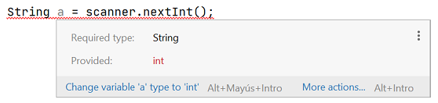

L'entrada estàndard i la classe Scanner
L'entrada estàndard és un flux de dades que van cap al programa.
Està suportada pel sistema operatiu. Per defecte, l'entrada estàndard obté les dades del
teclat, tot i que és possible redirigir-la per a obtenir les dades d'un fitxer.
De fet, no tots els programes utilitzen l'entrada estàndard. Però nosaltres l'utilitzarem
molt sovint per a demanar dades als usuaris per teclat, o per a obtenir les dades dels casos
de prova en els exercicis.
La forma típica en que resoldrem problemes és aquesta:
Llegir dades de l'entrada estàndard (System.in)
Processar les dades per a obtenir un resultat
Imprimir el resultat a la sortida estàndard (System.out)
Aquest tipus de problemes de programació es poden provar fàcilment amb diferents
formats de dades d'entrada, i per aquest motiu, els utilitzarem molt.
Llegir dades amb un scanner
La forma més simple d'obtenir dades de l'entrada estàndard és utilitzar la
classe Scanner. Permet als programes llegir valors de diferents tipus
(strings, números, etc.) de l'entrada estàndard.
Per a utilitzar la classe Scanner s'ha d'afegir aquesta sentència d'importació
al principi del fitxer de codi:
import java.util.Scanner;
Després s'ha d'afegir aquesta construcció a dintre del mètode main:
Scanner sc = new Scanner(System.in);
En aquesta línia hem creat un objecte de la classe Scanner, que ens
permet utilitzar els seus mètodes. Aprendrem més sobre classes i objectes més
endavant. System.in indica que es llegirà el flux de dades de l'entrada
estàndard (habitualment, el teclat). De moment, no és necessari que comprenguis aquesta línia, solament
escriu-la exactament així.
Anem a escriure el primer programa que llegeix dades del teclat:
Prova a escriure i executar aquest programa a l'IntelliJ.
import java.util.Scanner;
public class Main {
public static void main(String[] args) {
Scanner sc = new Scanner(System.in);
System.out.println("Hola, com et dius?");
String nom = sc.nextLine();
System.out.print("Hola ");
System.out.print(nom);
System.out.println("!");
}
}
Quan l'executem, veurem el següent (en verd es mostra l'entrada
introduïda per teclat):
Hola, com et dius?
Josep Ramon
Hola Josep Ramon!
Veiem pas a pas, l'execució del programa:
- A 1 importem la classe Scanner
- A 6 creem l'objecte scanner que s'utilitza per llegir
dades introduïdes per teclat.
- A 10 utilitzem el mètode nextLine() per a llegir una
línia de dades del teclat. Guardem les dades llegides a la variable nom
- A 13 imprimim la variable nom, que conté les dades que s'han
llegit a 10
Mètodes de la classe Scanner
Hi ha diversos mètodes a la classe Scanner que ens permeten llegir
diferents tipus de dades de l'entrada estàndard. En aquesta taula tens un
resum dels mètodes que més utilitzarem en aquest curs:
| Mètode | Tipus | Utilitat |
|---|
| nextInt() | int | llegeix un número enter |
| nextFloat() | float | llegeix un número decimal |
| nextBoolean() | boolean | llegeix un valor booleà |
| next() | String | llegeix una paraula |
| nextLine() | String | llegeix fins al final de línia |
Quan llegim dades utilitzant aquests mètodes hem d'utilitzar les variables del tipus
adequat per a guardar la dada que es llegeix. Per exemple:
import java.util.Scanner;
public class Main {
public static void main(String[] args){
Scanner sc = new Scanner(System.in);
int quantitat = sc.nextInt();
float preu = sc.nextFloat();
boolean pagat = sc.nextBoolean();
String codi = sc.next();
String nom = sc.nextLine();
System.out.println(quantitat);
System.out.println(preu);
System.out.println(pagat);
System.out.println(codi);
System.out.println(nom);
}
}
5 1,99 true PR101 Galetes Maria
5
1.99
true
PR101
Galetes Maria
Observa que el preu introduït per teclat s'ha escrit utilitzant una coma
, en lloc d'un punt . per a separar les xifres decimals
(1,99 en lloc de 1.99). Això es degut a que l'Scanner
utilitza l'idioma del Sistema Operatiu per al format d'entrada, i en
castellà/català els decimals es separen amb una coma ,. Si tinguèssim el
Sistema Operatiu configurat en anglès, caldria haver introduït el número decimal
utlitzant un punt.
Es pot forçar a l'Scanner a utilitzar l'idioma anglès per al format de dades
d'entrada, és a dir, a utilitzar el punt en els decimals. Ho podem fer amb
el mètode setLocale(), just després de crear l'scanner, així:
Scanner sc = new Scanner(System.in);
sc.useLocale(Locale.US); // usar el format angles
Per contra, els mètodes print() i println() sempre imprimeixen
separant els decimals amb un punt.
Hem vist que cal utilitzar el tipus de variable adequat
al mètode que utilitzem per a llegir. Si no utilitzem el tipus adequat, el programa
no s'executarà. Per exemple, no podem utilitzar una variable de tipus String
per a guardar un valor llegit amb nextInt():
String a = sc.nextInt(); // error, cal utlitzar el tipus int
Per sort, l'IDE ens ajuda a detectar i solucionar aquests errors, indicant en
subratllat vermell l'error i proporcionant ajuda sobre com solucionar-lo:

InputMismatchException
Una altre error que pot ocòrrer és que l'usuari no introdueixi una dada que
correspongui amb el tipus que s'ha de llegir. En aquest cas, el programa donarà
una excepció i s'aturarà inesperadament.
Per exemple, el següent programa tracta de llegir un enter del teclat, però
l'usuari introdueix un text (holaaa). L'execució del programa s'abortarà amb una excepció
de tipus InputMismatchException:
System.out.println("Introdueix un número:");
int numero = sc.nextInt();
Introdueix un número:
holaaa
Exception in thread "main" java.util.InputMismatchException
at java.base/java.util.Scanner.throwFor(Scanner.java:939)
at java.base/java.util.Scanner.next(Scanner.java:1594)
at java.base/java.util.Scanner.nextInt(Scanner.java:2258)
Més endavant veurem com prevenir aquestes situacions, i fer el nostre
programa resistent a qualsevol entrada que introdueixi l'usuari.
Consumir dades de l'entrada
Les crides als mètodes de lectura de l'scanner van consumint dades de l'entrada
sempre que hi hagi, i si no hi han dades esperaran fins que hi hagin.
Vegem-ho amb un exemple. Aquest programa llegeix dos números de l'entrada:
System.out.println("Introdueix el primer número:")
int a = sc.nextInt();
System.out.println("Introdueix el segon número:")
int b = sc.nextInt();
System.out.println("Els números introduïts són:")
System.out.println(a);
System.out.println(b);
Quan executem el programa, la primera crida a nextInt() 2, quedarà
esperant a que l'usuari introdueixi un número. Si l'usuari introdueix un únic
número, aquest serà consumit de l'entrada i assignat a la variable a.
Quan es fa la segona crida a nextInt() 4, el programa tornarà a esperar
a que s'introdueixi un altre número.
Introdueix el primer número:
1234
Introdueix el segon número:
6789
Els números introduïts són:
1234
6789
Però, si a la primera crida a nextInt() 2, l'usuari introdueix
dos números, el primer d'ells serà consumit per l'scanner i assignat a la
variable a, i el segon número quedarà pendent per consumir. Així, a la segona crida
a nextInt() 4, l'scanner no esperarà a que s'introdueixi un
altre número, sinò que consumirà el número que havia quedat per consumir i quedarà
assignat a la variable b sense esperar a que s'introdueixi un altre número.
Introdueix el primer número:
1234 6789 // introdueix dos numeros
Introdueix el segon número: // consumeix el segon número
Els números introduïts són:
1234
6789
Hi ha situacions en què és una mica enrevesada la lectura de dades. Cal tenir en
compte la posició del cursor i la forma en que llegeixen les dades els mètodes.
El primer a tenir en compte és que tots els mètodes, excepte el nextLine(),
descarten qualsevol espai-en-blanc o salt-de-línia que troben al flux de dades de l'entrada,
fins que troben una dada per a llegir. Per contra, nextLine(), llegirà tots els
caracters (incloent espais-en-blanc) fins que trobi un salt-de-línia (que descartarà).
Vejem els comportaments d'aquests mètodes amb varis exemples. Al flux de dades
d'entrada indicarem els espais-en-blanc amb el símbol ␣ i els salts-de-línia
amb el símbol ⏎.
Exemple 1
Veiem un exmple amb el mètode nextInt(). Si tenim aquest programa:
int a = sc.nextInt();
i al flux d'entrada s'introdueix el següent:
␣␣␣␣␣␣␣␣1234␣␣␣␣␣␣␣␣6789⏎
el mètode nextInt() descartarà els espais-en-blanc que hi ha al principi,
i llegirà unicament el número 1234. Els espais-en-blanc de després i el
número 6789 quedaran a l'espera de ser consumits.
␣␣␣␣␣␣␣␣1234␣␣␣␣␣␣␣␣6789⏎
-
Exemple 2
Si tenim aquest programa:
boolean a = sc.nextBoolean();
float b = sc.nextFloat();
String c = sc.next();
int d = sc.nextInt();
String e = sc.nextLine();
i al flux d'entrada tenim el següent:
␣␣␣true␣␣⏎
␣14.5␣␣␣hola␣␣⏎
␣␣2345␣␣␣que tal?␣␣⏎
La crida a nextBoolean() descartarà els espais/salts fins a llegir
la dada true:
␣␣␣true␣␣⏎
␣14.5␣␣␣hola␣␣⏎
␣␣2345␣␣␣que tal?␣␣⏎
La crida a nextFloat() descartarà els espais/salts fins a llegir
la dada 14.5:
␣␣␣true␣␣⏎
␣14.5␣␣␣hola␣␣⏎
␣␣2345␣␣␣que tal?␣␣⏎
La crida a next() ignorarà els espais/salts fins a llegir
la dada hola:
␣␣␣true␣␣⏎
␣14.5␣␣␣hola␣␣⏎
␣␣2345␣␣␣que tal?␣␣⏎
La crida a nextInt() ignorarà els espais/salts fins a llegir
la dada 2345:
␣␣␣true␣␣⏎
>␣14.5␣␣␣hola␣␣⏎
␣␣2345␣␣␣que tal?␣␣⏎
La crida a nextLine() no descartarà els espais i llegirà
la dada ␣␣␣que tal?␣␣, però sí que descartarà el salt-de-línia:
␣␣␣true⏎
14.5␣␣␣hola␣␣⏎
␣␣2345␣␣␣que tal?␣␣⏎
Exemple 3
Aquest exemple mostra una situació que és una font de confusió
molt comuna quan s'està aprenent a utilitzar l'Scanner.
Considera el següent programa:
import java.util.Scanner;
public class Main {
public static void main(String[] args){
Scanner sc = new Scanner(System.in);
System.out.println("Introdueix un número:");
int numero = sc.nextInt();
System.out.println("Introdueix un text:");
String text = sc.nextLine();
System.out.println("El numero és " + numero);
System.out.println("El text és " + text);
}
}
Abans de seguir amb l'exemple, és interessant que escriguis aquest programa
i l'executis a l'IDE.
Si has executat aquest programa, veuràs una comportament força extrany. El programa llegeix
correctament el número que introduïm 8, però es "salta" la lectura del text 10!
Introdueix un número:
1234
Introdueix un text:
El numero és 1234
El text és
Veiem perquè ocorre això i com corregir-ho.
Quan introduim un número i després polsem Intro, les dades que estem
posant a l'entrada estàndard són el número i un salt-de-línia:
1234⏎
La primera crida a nextInt() 8 llegeix el número, però no descarta el salt-de-línia:
1234⏎
La següent crida a nextLine() troba el salt-de-línia i el descarta. Per tant el que ha llegit
és un String buit, i per això no ha esperat a que s'introdueixin més dades a l'entrada.
1234⏎
La forma de corregir aquest error, és realitzar un nextLine() extra per
a que consumeixi el salt-de-línia que hi ha a continuació del número. El programa quedaria així:
System.out.println("Introdueix un número:");
int numero = sc.nextInt();
sc.nextLine(); // consumim el salt-de-linia
System.out.println("Introdueix un text:");
String text = sc.nextLine();
D'aquesta manera el primer nextInt() 2 llegirà el número:
1234⏎
El següent nextLine() 3 descartarà el salt-de-línia
1234⏎
Com ja no queden dades a consumir a l'entrada, el nextLine() 5 esperarà
a que s'introdueixin més dades a l'entrada.
Com a norma general, quan llegim dades línia a línia,
haurem de posar un nextLine() extra
enmig d'un
nextInt(), nextBoolean(), nextFloat() o next(),
i un
nextLine().
-
Exemple 4
L'últim exemple que veurem també és una situació que sovint costa de resoldre, i que
es dona quan llegim diferents dades en una mateixa línia.
Considerem aquest programa:
System.out.println("Introdueixi la seva edat i el seu nom:");
int edat = sc.nextInt();
String nom = sc.nextLine();
System.out.println("Edat:");
System.out.println(edat);
System.out.println("Nom:");
System.out.println(nom);
Introdueixi la seva edat i el seu nom:
24 Joan Ramon
Edat:
24
Nom:
Joan Ramon
En aquest programa, l'usuari introdueix l'edat i el nom a la mateixa línia. L'edat es llegeix correctament
però observa l'espai-en-blanc que s'ha llegit abans del nom.
La crida a nextInt() 2 ha llegit el número, i ha deixat el cursor just a continuació:
24␣Joan␣Ramon⏎
Com el nextLine() 3 no descarta els espais, ha llegit els caracters restants fins el salt-de-línia.
24␣Joan␣Ramon⏎
Per a corregir aquesta anomalia, podem utilitzar el mètode trim(), que elimina els espais
en blanc al principi d'un text. Així, quan vulguem llegir una línia, i estar segurs de que no tindrem
espais molests al principi, ho podem fer així: nextLine().trim().
El programa quedaria així:
System.out.println("Introdueixi la seva edat i el seu nom:");
int edat = sc.nextInt();
String nom = sc.nextLine().trim(); // eliminem els espais al principi
System.out.println("Edat:");
System.out.println(edat);
System.out.println("Nom:");
System.out.println(nom);
Fes coincidir els mètodes de la classe Scanner amb el tipus de valor que llegeixen.
nextInt()int
nextBoolean()boolean
nextFloat()float
next()String
Invoquem el mètode next() i introduïm el número 9 a l'entrada estàndard, quin tipus
de dada serà?
String
char
int
float
Hello you
Cada paraula a una línia
Contractar un xef
Carta formal
Arxius de codi font